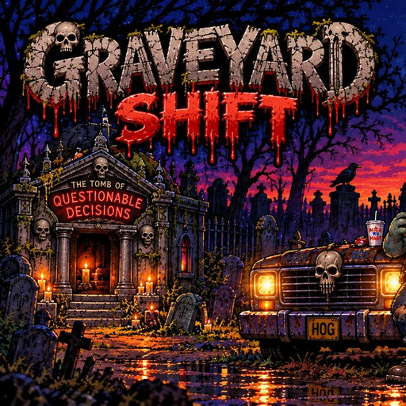
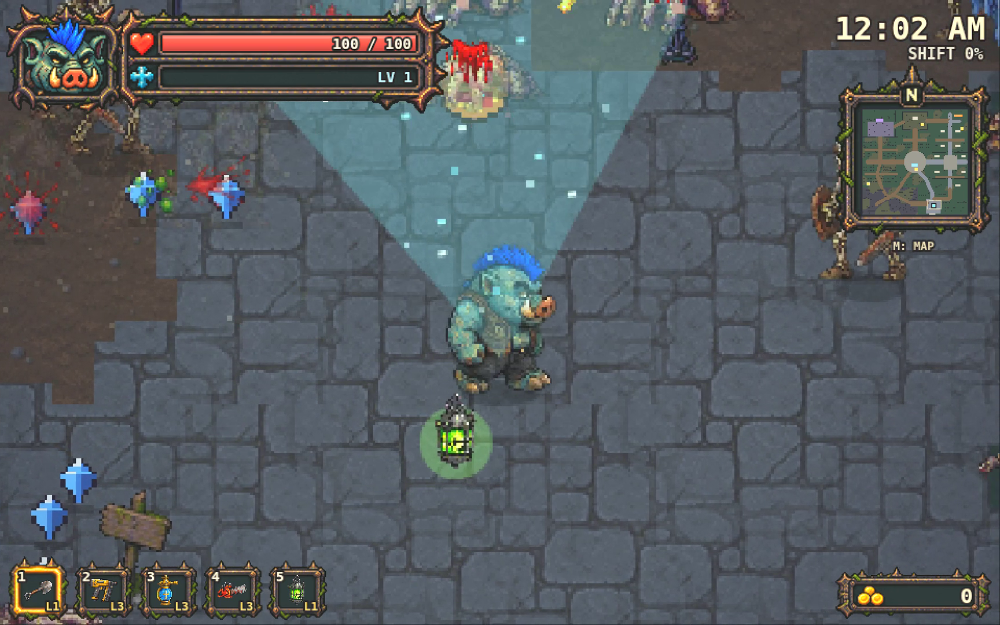
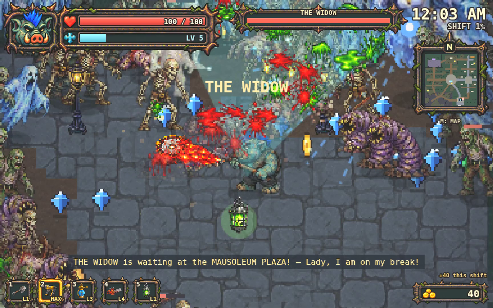
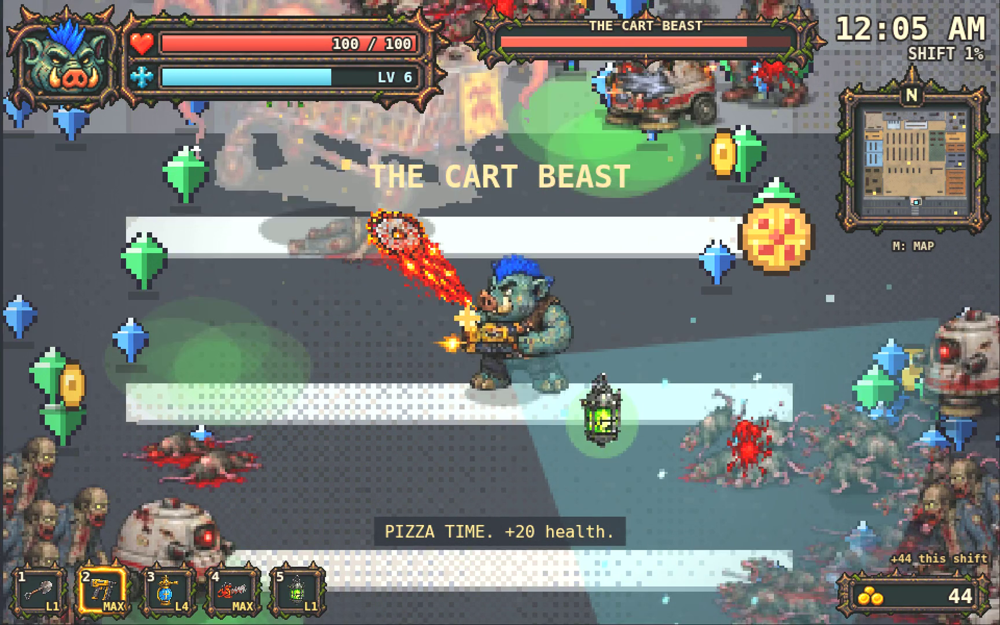
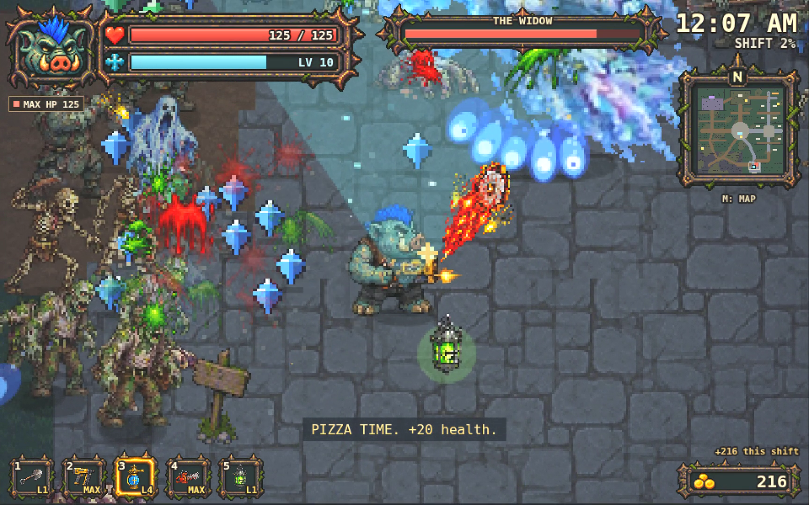

Grave Hog's Graveyard Shift — Press Kit
The dead don't clock out. Neither does Grave Hog.
About
Grave Hog's Graveyard Shift is a free browser pixel-art horror roguelite. Attacks are automatic, so you focus on moving and picking upgrades. Survive the cemetery night shift as Grave Hog, the cemetery's most overworked night-shift employee, then make one quick stop at the cursed Mega-Mart. Six bosses wait for you, including The Widow, The Cart Beast and The Cemetery King.
The game is part of THE JURN universe. It's in early access, and the latest build went live on October 23, 2026.
Fact sheet
| Title | Grave Hog's Graveyard Shift |
| Developer | Spacetrucker / THE JURN (solo developer) |
| Genre | Pixel-art horror roguelite (auto-attack) |
| Price | Free, no download or sign-up needed |
| Platform | Web browser on PC (keyboard + mouse) and mobile (touch) |
| Status | Early access. Latest build live Oct 23, 2026 |
| Play | thejurn.com/games/graveyard-shift/ |
| X | @Spacetrucker138 |
| Contact | contact@thejurn.com |
Gameplay video
⬇ Download gameplay video (MP4, 15 s)
Screenshots








Icon: icon-512.png · Key art: og-image.jpg


日本語
『Grave Hog's Graveyard Shift（グレイヴ・ホッグのグレイヴヤード・シフト）』
死者は定時で帰らない。墓守のグレイヴ・ホッグも同じだ。
『Grave Hog's Graveyard Shift（グレイヴ・ホッグのグレイヴヤード・シフト）』は、ブラウザで無料で遊べるドット絵ホラー・ローグライト。攻撃はオート、プレイヤーは移動とアップグレード選びに集中するだけ。墓地の夜勤を生き延びたら、次は呪われた巨大スーパー「メガマート」へ。未亡人（The Widow）、カート・ビースト（The Cart Beast）、墓地の王（The Cemetery King）など6体のボスが待ち受ける。
本作は、アンデッドバンドを中心としたホラーパンク世界「THE JURN」の一作。現在アーリーアクセス（開発中）。最新ビルドを2026年10月23日にthejurn.comで公開しました。
| 価格 | 無料（ブラウザ／ダウンロード・登録不要） |
| 開発 | Spacetrucker（THE JURN、個人開発） |
| 対応 | ブラウザ（PC・スマートフォン） |
| プレイ | https://thejurn.com/games/graveyard-shift/ |
| オフライン版 | ZIPをダウンロード（22 MB） |
| X | @Spacetrucker138 |
| 連絡先 | contact@thejurn.com |